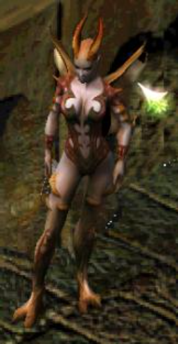
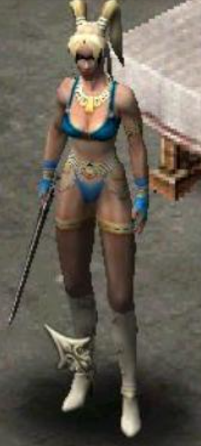

SACRED
GOLD
|
 |

|
|
Procede de una estirpe sanguinaria que se escindió
de la pura y noble raza de los Elfos.
El Elfo Oscuro posee terribles habilidades guerreras
y es un implacable luchador de las sombras. Prefiere
las espadas envenenadas y el combate cuerpo a cuerpo.
|
|
|
Los humanos luchan contra las hordas de orcos que proceden del sur,
estos a su paso arrasan ciudades y
poblados en los cuales masacran a sus habitantes.
Ancaria para repeler a la invasión orca cuenta con la Elfa del Bosque:
Las fuerzas de la naturaleza están de su lado.
Puede invocar a las criaturas del bosque para que luchen
junto a ella y servirse de la vegetación para preparar
trampas a sus enemigos.
Su destreza con el arco le permite disparar con precisión varias
flechas a la vez.
|
|

|
| 
|
|
La Diablesa procede del plano demoníaco,
de donde fue injustamente expulsada.
Puso todos sus poderes al servicio de la lucha contra
las fuerzas del mal.
Su destreza en el combate cuerpo a cuerpo se
complementa con el dominio de la magia negra,
una combinación que hace de ella un temible oponente.
|
|
|
Antiguas leyendas sitúan su origen en
una era anterior a la presencia de Elfos
y hombres en Ancaria.
Esta raza es descendiente de la estirpe
de los ángeles místicos de la época de las
Guerras de los Dioses representando a los paladines.
Los dioses proporcionaron a los Seraphínes magia celestial
para debilitar a sus oponentes antes de derribarlos.
|
|

|